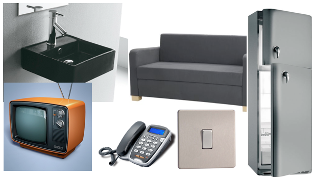

Empathy是什么呢
在我先解释Empathy是什么之前，我先来问你一个问题：为什么很多人都喜欢圆角呢？圆角到底是什么呢？
圆角？似乎到处都在使用圆角，我也说不清楚为什么，可是好像我已经习惯于对圆角的东西产生好感了。
确实是，在我们的日常生活中有很多解释不清的好感，不知不觉中带圆角的界面就成为了好的东西，从科学的角度，这种好感的产生是有根可寻的。我们来试着寻找你产生好感的原因，我来问你：在你的日常生活中，可否见到圆角？
让我想想，厨房的冰箱，电话手柄，电视机，还有浴室的很多东西，沙发好像也像是圆角，就这些。
很好，让我把你想到东西列在下面，然后你再想想在你日常生活中什么不是圆角的？

让我想想，我的门框，电视柜，挂在墙上的画框，厨房的橱柜，窗户，能想到的就这些。
好，也让我把这些东西列在下面，你看看和你上面发现有圆角的东西有什么不同？
区别我说不清楚，但是我发现上面那个电视是有圆角的，下面那个电视是没有圆角的。
这真是一个好发现，这正是我要说的。以前的老电视是没有遥控的，这就需要人走上前去“用手”去调换电视频道或者音量，而现在的电视早就已经使用遥控装置，是不需要人去走上前“用手”进行操作的，这个是不是“用手”的区别导致了设计是不是应该是圆角。
你在仔细想想地铁上的把手，任何门上的把手，它都是具备一定曲线设计的，因为你要和它发生“交互”──直接的身体接触，直角的设计使得它显得尖锐，让人觉得不安全，圆角的处理让这样的交互变得更加顺畅和舒服。你在回头看看你举出的例子，电话、开关、冰箱、沙发、以及最浴室里的一切，都有这样的共性。
在这里圆角给你传达的语言是：放心地触碰我吧！我很安全。
那那些直角所表达的是什么呢？
如果我说90%靠墙的物体都是直角的你信不信？那些靠墙的东西往往不需要人经常与之发生接触，就像画框门框窗框或者各种立柜，那么物体就不需要给使用者“触碰我也会很安全”的信号，自然也不需要使用圆角，而真正圆角处理的是它们可以活动的东西，比如柜门边缘以及把手。
同时直角也有它所独有的信号给使用者，那就是“密不透风，严丝合缝，我保护的是我里面的东西，谁也不敢轻易碰我”。就像各种门各种窗，如果它们都是圆角的，我们的感觉就像童话故事里的小屋一样，虽然浪漫但不实用。
那么好吧，我知道了他们的区别，又能怎样呢？
其实这并不是直角或者圆角的物体给予我们的信息，而是我们下意识中对它们产生的解读，这些解读来自与我们的正面感知──当我们第一次感受母亲的乳房；当我们第一次从树上摘下苹果把玩；当我们第一次吃棉花糖感受酥软；当我们第一看到云朵连绵；同时也来自我们的反面感知──当我们第一次打针；当我们第一次被桌角撞头；当我们第一次被父母的戒尺挨板子；当我们第一次看到父亲杀鸡。
这些正面感知让我们知道圆润的东西好接近可以触摸；同时反面感知强化了，不圆润的东西会产生疼痛。
在这里我们就出现了第一次移情的过程──当人们在看到他需要发生接触的物体时，他会用以往的经验转移情感到这个物体上。这个就是我们所说的移情。换句话说，当人选择去触摸一个开关时，圆角的开关就像而是儿时乳房能给人带来的安全感，人们在下意识中产生移情，去换得真正使用它的驱使。
你现在想想你每天都要使用的界面，如果它是圆角，你就觉得舒服，你能理解你舒服的感觉来自于哪里了吗？
来自于妈妈？
这是你说的，可不是我说的，我不能说它是100%的因素，但我相信人最深处对感知的判断来自于它的第一次经验，往后出现类似的情况时他就会下意识的产生移情。我之所以说它不是100%的因素，还因为圆润的东西代表流动的，灵活的，软件界面的圆角同时想表达信息快速流动的含义。但至少我敢说Apple MacBook的全圆角设计一定是跟乳房崇拜有关。
那么这个跟体验设计有什么关系？
既然我说“第一次移情”，那么必然还有第二次。这里的所谓“第二次移情”指的是体验设计师需要把被测者的感受转移到自己身上，充分站在被测者的情感中去进行设计。通过移情，设计师尽可能地了解使用者最深层次的故事，这里包括：
- 他们是怎样的人？他们的故事是怎样的？
- 他们是如何思考周围环境的？什么东西他们觉得高兴？什么东西让他们觉得讨厌？
- 他们是通过什么被周围环境影响的？什么是影响他们行为的重要因素？
- 他们是如何评价周围环境的？他们曾经说了什么？
- 他们是如何影响周围环境的？他们曾经做了什么？什么是他们认为做过正确的事？什么事情却让他们后悔？
- 他们的“第一次”是怎样的？“第一次”的网上购物，“第一次”的网上聊天；
当我们充分了解了这些，把一个活灵活现的、有血有肉的人物构造出来，作为设计师，才能通过所等到的信息，在自己的内心模拟出一个相似的情感──将受测者的情感转移到自己身上（移情），并在设计中处处体现这种情感，让设计尽可能多的符合这种情感，使用户在不知不觉中体会更加符合他们情感诉求的体验。
当然，我不是让你们把开关设计成妈妈状，不过真的有一家很内个的网站userporn，把视频播放窗口的播放键设计成了妈妈状，充分体现了体验设计的真谛。
在我关注那个拥有妈妈状播放按钮的网站前，能不能告诉我有哪些可以使用的实践？
当然有一些值得推荐的实践，不过今天就到这里，因为复活节假期的原因，我这几天写了太多博客，信息是需要消化的，你现在可以去找妈妈了，以学习知识为主，娱乐休闲为辅啊。